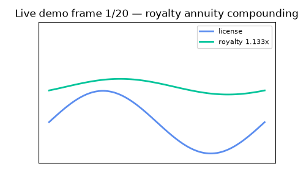
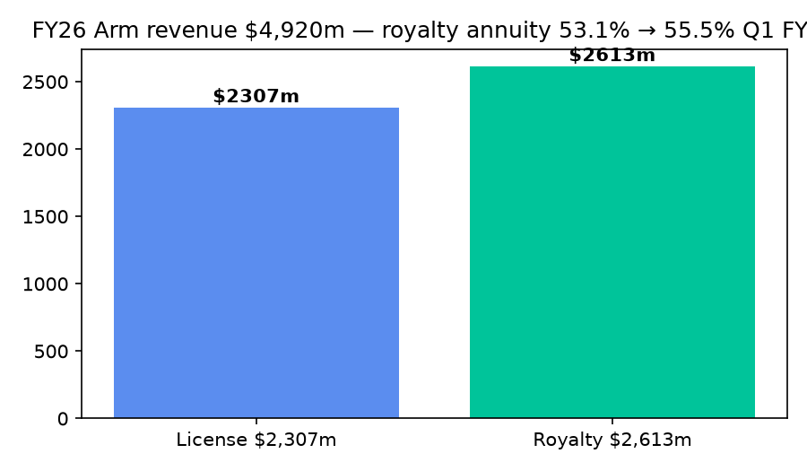
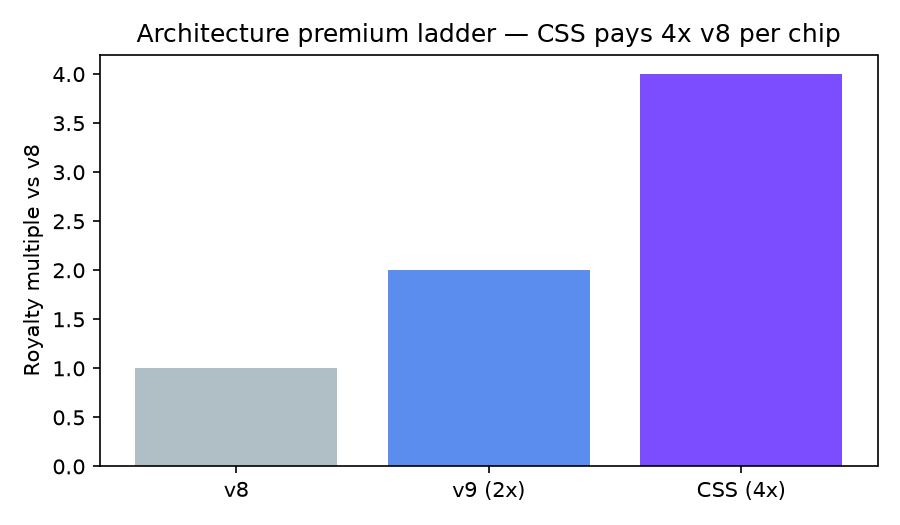
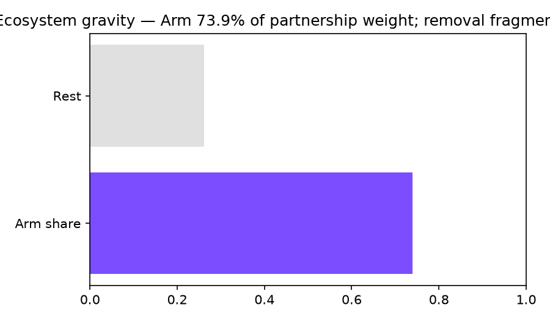
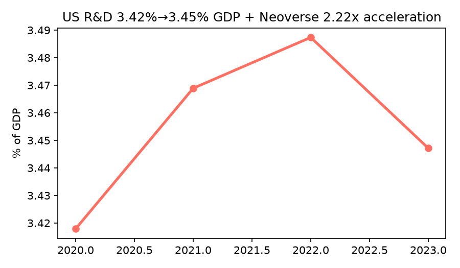

This lab turns the 6-week technology-business course into 5 runnable experiments. Every chart below is produced by code and checked against live stock, currency and development data. Copy two commands and you reproduce all of it.
CEO summary in 20 seconds: Arm licenses chip blueprints once, then collects a small fee on every chip shipped for a decade (royalty 53%→55% of revenue). Newer blueprints pay 2× then 4×. A network of 1000+ partners + 22M developers makes leaving costly. That is why software gravity beats factory ownership — and this repo lets you measure it.
data/live/Above: live canvas replays the royalty-compounding loop. Below: the exact GIF embedded in the README (autoplays on GitHub, 119 KB, under the 25 MB limit).

Video path: GitHub READMEs autoplay GIFs but strip raw <video>. So we ship GIF in README + full narrated tour in preview.html + optional docs/demo.mp4 you can record with any screen recorder. To record your own: docker compose up, capture 30 s, export GIF <10 s / <5 MB for fastest load.
0–5s: License once → royalties for years. 5–12s: Upgrade ladder pays more per chip. 12–20s: Partners + developers lock it in. 20–30s: Trends confirm acceleration. Then the selector tells you which model fits your idea.
docker compose up
# → 5/5 PASS, charts in data/live/
python -m src.experiments.benchmark_suitePrefer video? Upload a 30-s MP4 to YouTube and add a clickable thumbnail in the README — keeps the README fast and gives viewers sound.
Let's work this out in a step-by-step way to be sure we have the right answer. No prior chip knowledge needed. Each row takes ~2 minutes.
docker compose up builds and runs the full suite. No manual setup.make_assets.py regenerates 4 PNGs + 119 KB demo GIF. Under GitHub’s 25 MB autoplay limit.| You are… | Use it to… | Start here |
|---|---|---|
| 🎓 Student / job seeker | Speak fluently about licensing, royalties, ecosystems in interviews | Beginner guide + E2 + E5 |
| 🔧 Engineer with an idea | Decide: prototype free, pay at production, or buy finished chip? | E5 picker, then E1 costs |
| 🚀 Startup founder | Pitch with numbers: annuity, premium ladder, pipeline math | Scoreboard + docs/charts/ |
| 🏢 Enterprise strategist | Compare subscription vs system vs chip on volume/funding | E5 + E3 network |
| 🎓 Teacher / PhD | Assign reproducible lab; extend 6 hidden-pattern hypotheses | README § Research + papers/ |
| 📊 Analyst | Refresh live comps (ARM/NVDA/QCOM/INTC) + FX + R&D in one run | E4 + data/live/*.json |

Royalty now exceeds license — the annuity engine.

Newer blueprints earn multiples per chip.

Partnership weight concentrates at the hub.

Research intensity + server acceleration agree.
git clone <this-repo> && cd armeducationx-business-models-phd-2026
docker compose up
# or without Docker:
pip install -r requirements.txt
python -m src.experiments.benchmark_suite
cat data/live/benchmark_table.mdOutputs: data/live/e1_*.json … e5_*.json, benchmark_all.json, benchmark_table.md. Open this file (preview.html) in any browser — no server needed.
preview.html / docs/demo.gif / docs/charts/*.png
src/experiments/live_data.py — fetch + fallback
src/experiments/e1_*.py … e5_*.py — the five labs
src/experiments/benchmark_suite.py — runs all, writes table
data/live/*.json — proof you can diff
papers/REFERENCES.md — sources